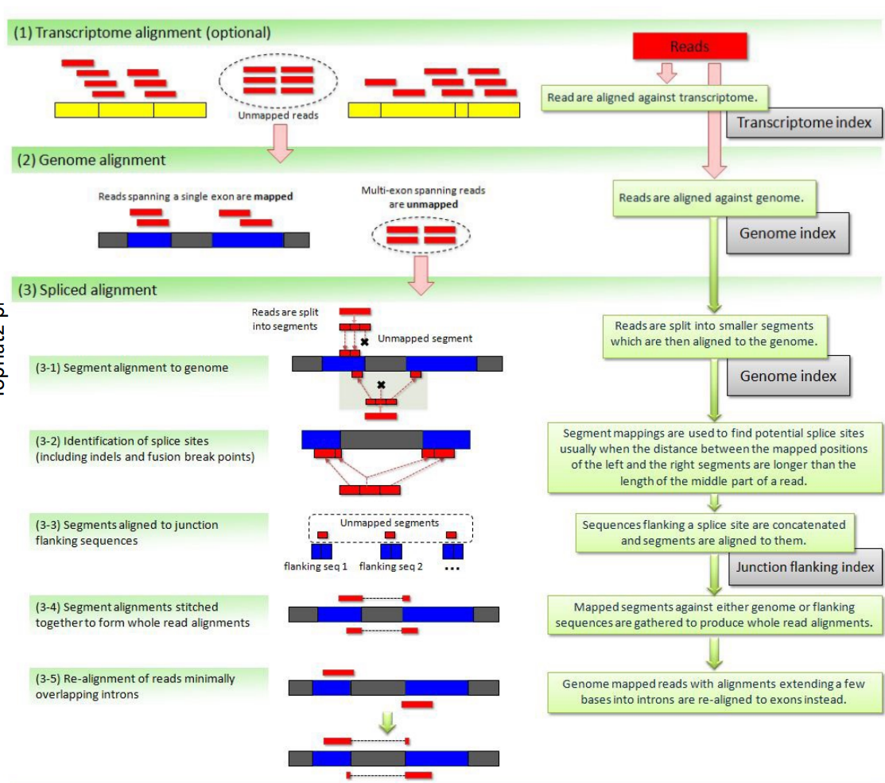

Notes taken @ ETH Zurich
Introduction
Here I list all courses I took at ETH Zurich and provide a brief overview of the course content. The clickable links will lead you to the respective course notes.
Courses are organized by semester and year. The course notes are organized by lecture.
22HS
@ETH Zürich
- Computational Biology
- Data Mining I
- Information Systems for Engineers (Won't be covered here)
- Computational Systems Biology
- Concepts of OBject-Oriented Programming
@Universität Basel
- Current Topics in Biophysics
- Molecular Medicine I
- Molecular Control of Vertebrate Development and Organogenesis
23FS + HS
@ETH Zürich
- Mobile Health and Activity Monitoring
- Introduction to Machine Learning
- Big Data for Engineers
- Statistical Models in Computational Biology
@Universität Zürich
@Universität Basel
- High Performance Computing
- Distributed Systems (Dropped, but auditted till the end)
- Molecular Medicine II
- Chromatin and Epigenetics
No courses (except for seminar) taken in 23HS since I was doing an internship at Roche.
24FS
- Biofluiddynamics
- Synthetic Biology I
24HS
- Computer Architecture
- Applied Bioinformatics: Microbiomes
- Algorithms and Data Structures for Population Scale Genomics (Audit; Probably won't be covered here)
- Probabilistic Artificial Intelligence (Audit; Probably won't be covered here)
- Evolutionary Dynamics
Data Mining I
A course taught by Prof. Karsten Borgwardt
There used to be Data Minining I and II, but since 2022 fall was the last time this course was offered, I only took Data Mining I.
The course was really well organized and the concepts were explained really clear, but it's not for beginners (students biological background) without solid mathematical foundation. My classmates with a biology background struggled a lot.
Table of Contents
- 01. Metrics
- 02. Classification
- 03. Clustering
- 04. Feature Selection
- 05. Applications in Computational Biology
Metrics
Introduction to Data Mining (DM)
- Definition: Data mining is the search for patterns and statistical dependencies in large datasets. It is often associated with machine learning or knowledge discovery.
- Application: DM is applied in biology, medicine, and various industries for personalized recommendations, personalized medicine, etc.
- Key Topics: Distance functions, classification, clustering, feature selection.
Personalized Medicine through Data Mining
- Vision: Tailor treatments to patients’ genetic/molecular properties to increase efficacy. Drugs often work for only a fraction of patients due to genetic variability.
- Technological Advances: Genome sequencing has become rapid and scalable, identifying variations among millions of genetic bases.
- Goals: Detect correlations between diseases, drug responses, and genetic variations.
Distance Functions
- Key Concept: Similarity or distance between objects is at the core of data mining.
- Metric Definition: A metric on vectors \(x_1, x_2, x_3 \in \mathbb{R}^d\) is a function \(d\) if:
- \( d(x_1, x_2) \geq 0 \)
- \( d(x_1, x_2) = 0 \text{ if and only if } x_1 = x_2 \)
- \( d(x_1, x_2) = d(x_2, x_1) \)
- \( d(x_1, x_3) \leq d(x_1, x_2) + d(x_2, x_3) \)
Common Distance Functions
- Manhattan Distance: \( d(x, x') = \sum_{i=1}^d |x_i - x'_i| \)
- Euclidean Distance: \( d(x, x') = \sqrt{\sum_{i=1}^d (x_i - x'_i)^2} \)
- Chebyshev Distance: \( d(x, x') = \max_i (|x_i - x'_i|) \)
- Minkowski Distance: \( d(x, x') = \left(\sum_{i=1}^d |x_i - x'_i|^p \right)^{1/p} \)
- \( p = 1 \) recovers the Manhattan distance, \( p = 2 \) recovers the Euclidean distance, and for \( p \rightarrow \infty \), it converges to the Chebyshev distance.
Distance on Sets and Strings
- Jaccard Distance: Measures dissimilarity between sets \( A \) and \( B \).
- Formula: \( d(A, B) = \frac{|A \cup B| - |A \cap B|}{|A \cup B|} \)
- String Similarity (k-mer): Quantifies similarity by representing strings as histograms of k-mer frequencies. Example: the strings "downtown" and "known" can be compared based on their 3-mer substrings.
Distance on Time Series
- Dynamic Time Warping (DTW): Measures similarity between time series of different lengths or varying time intervals.
- Recursive formula: [ DTW(i, j) = d(x_i, x'_j) + \min\left{ DTW(i, j-1), DTW(i-1, j), DTW(i-1, j-1) \right} ]
- Used when direct time-to-time comparisons are not feasible.
Distance on Graphs
- Graph Comparison Problems: Key problems include determining if two graphs are identical (graph isomorphism) or finding if one graph is contained within another (subgraph isomorphism).
- Weisfeiler-Lehman Kernel: Efficient method for graph comparison by iterating over node neighborhoods, compressing them, and relabeling based on sorted labels.
- This method is highly scalable and is commonly used in chemoinformatics and bioinformatics.
Applications in Biology & Medicine
- Data Mining in Genetics: Searches for disease-associated loci in genomes. Challenges include:
- Missing Heritability: Many diseases show weak correlations with genetic loci due to small sample sizes, environmental factors, and oversimplified models.
- Interaction Search: Efficient algorithms are needed for exploring interactions between millions of genetic loci without exhaustive enumeration.
Key Concepts in DM
- Knowledge Discovery Process: Stages include data cleaning, integration, selection, transformation, mining, pattern evaluation, and presentation.
- Outlier Detection: Finding patients with unusual disease progression or drug response is a key challenge in personalized medicine.
Algorithms and Future of Data Mining
- Graph Kernels: Algorithms for comparing large graphs (like biological networks) are critical in drug discovery and gene interaction studies.
- Future Trends: Increasing use of wearable devices, electronic health records, and indirect monitoring through social media is expected to fuel personalized medicine.
Figures and Diagrams (Explanation)
- Dynamic Time Warping (DTW): A matrix-based visual method for aligning two time series optimally by minimizing alignment costs.
- Weisfeiler-Lehman (WL) Kernel: Shows the iterative process of graph comparison by relabeling nodes based on their neighbor labels.
Classification Algorithms
Classification Overview
- Problem: Given an object \(x\), predict its class label \(y\). Examples include identifying objects in computer vision, detecting fraudulent credit card transactions, and gene classification in personalized medicine.
- Types:
- Binary classification: \(y \in {0, 1}\)
- Multiclass classification: \(y \in {1, \dots, n}\)
- Regression: \(y \in \mathbb{R}\)
Evaluating Classifiers
-
Contingency Table: For binary classification, results are represented as:
| | \(y = 1\) |\( y = -1 \)| |-------|-------|--------| | \( f(x) = 1 \) | TP | FP | |\( f(x) = -1 \)| FN | TN |
TP: True Positive, FP: False Positive, FN: False Negative, TN: True Negative.
-
Accuracy: \[ \text{Accuracy} = \frac{TP + TN}{TP + TN + FP + FN} \] Accuracy is not ideal for imbalanced classes, which leads to focusing on precision and recall:
-
Precision: \( \frac{TP}{TP + FP} \)
-
Recall: \( \frac{TP}{TP + FN} \)
-
ROC Curve: Plots true positive rate (sensitivity) vs. false positive rate. A perfect classifier's curve passes through the point (0,1). The Area Under the Curve (AUC) is a metric summarizing the performance of the classifier: \[ AUC = P\left(\text{positive point gets higher score than negative}\right) \]
Cross-Validation and Bootstrapping
- Cross-Validation: Split data into \(k\) subsets, train on \(k-1\), and test on the remaining subset. This is repeated \(k\) times.
- Bootstrapping: Random sampling with replacement to create multiple training/test splits, averaging results over multiple iterations.
- Parameter Tuning: Use internal cross-validation on training data to optimize model parameters without overfitting.
Nearest Neighbors (k-NN)
-
k-NN: Classifies a point based on the majority label of its \(k\) nearest neighbors.
- Distance Metric: The Euclidean distance is often used: \[ d(x, x') = \sqrt{\sum_{i=1}^d (x_i - x'_i)^2} \]
- Challenges: Selecting \(k\), runtime optimization, and handling high-dimensional data.
-
Mahalanobis Distance: \[ d_M(x, x') = \sqrt{(x - x')^\top \Sigma^{-1} (x - x')} \] where \(\Sigma\) is the covariance matrix of the dataset.
Naive Bayes Classifier
-
Bayes' Rule: \[ P(Y = y | X = x) = \frac{P(X = x | Y = y) P(Y = y)}{P(X = x)} \]
- The classifier assumes conditional independence of features: \[ P(X | Y = y) = \prod_{j=1}^d P(X_j | Y = y) \]
-
Prediction: \[ \hat{y} = \arg\max_{y} P(Y = y) \prod_{j=1}^d P(X_j | Y = y) \]
- Naive Bayes works well in practice despite the strong independence assumption.
Linear Discriminant Analysis (LDA)
-
Assumptions:
- Data from each class is normally distributed with the same covariance matrix but different means \(\mu_0\) and \(\mu_1\).
-
Log-Likelihood Ratio: \[ f(x) = \log\left( \frac{P(Y=1|X=x)}{P(Y=0|X=x)} \right) \]
- Linear discriminant: \( f(x) = w^\top x + b \), where \(w = (\mu_1 - \mu_0)^\top \Sigma^{-1}\).
Logistic Regression
-
Logistic Function: \[ f(z) = \frac{1}{1 + e^{-z}} \] where \(z = w^\top x + b\).
-
Training: Minimizing the logistic loss: \[ \mathcal{L}(w) = \frac{1}{n} \sum_{i=1}^n \log(1 + e^{-y_i (w^\top x_i)}) \]
- The weights \(w\) are learned by gradient descent or other optimization techniques.
Decision Trees
- Concept: Split the data recursively based on feature values to maximize information gain, using criteria like entropy and the Gini index:
- Entropy: \[ H(D) = -\sum_{i=1}^m p_i \log_2(p_i) \]
- Gini Index: \[ Gini(D) = 1 - \sum_{i=1}^m p_i^2 \]
- Random Forests: Ensemble of decision trees, each built on random subsets of data and features.
Support Vector Machines (SVM)
- Hard-Margin SVM: Finds the hyperplane that maximizes the margin between classes: \[ \min_w \frac{1}{2} |w|^2 \quad \text{s.t.} , y_i (w^\top x_i + b) \geq 1 \]
- Soft-Margin SVM: Allows some misclassification using slack variables \(\xi\): \[ \min_w \frac{1}{2} |w|^2 + C \sum_{i=1}^n \xi_i \quad \text{s.t.} , y_i (w^\top x_i + b) \geq 1 - \xi_i \] where \(C\) controls the trade-off between margin size and misclassification.
Kernel Methods
- Kernel Trick: Maps data into a higher-dimensional space to make it linearly separable. Common kernels include:
- Linear Kernel: \( k(x, x') = x^\top x' \)
- Polynomial Kernel: \( k(x, x') = (x^\top x' + c)^d \)
- Gaussian (RBF) Kernel: \[ k(x, x') = \exp\left(- \frac{|x - x'|^2}{2\sigma^2}\right) \]
Figures/Diagrams
- ROC Curves: Visualization of model performance with true positive vs. false positive rates.
- Logistic Function: S-shaped curve representing the probability output from logistic regression.
- Decision Trees: Flowchart-like structures splitting data based on feature values.
Clustering
What is Clustering?
- Definition: Clustering is the task of grouping a set of objects such that objects in the same group (cluster) are more similar to each other than to those in other groups. It is an example of unsupervised learning since no predefined labels (training data) are used.
- Applications:
- Grouping images to discover categories.
- Clustering patient data to uncover disease subtypes.
- Detecting communities in social networks.
k-means Clustering
-
Objective: Partition data into \( k \) clusters by minimizing the variance within each cluster: \[ V(D) = \sum_{i=1}^{k} \sum_{x_j \in S_i} (x_j - \mu_i)^2 \]
- \( S_i \): the \(i\)-th cluster
- \( \mu_i \): the mean of the cluster
- \( D \): dataset
-
Algorithm (Lloyd's Algorithm):
- Partition data into \( k \) initial clusters.
- Compute the mean for each cluster.
- Reassign each point to the closest cluster mean.
- Repeat until no point changes its cluster.
-
Challenges:
- Sensitive to the choice of \( k \) (number of clusters).
- Initialization affects the final result, and the algorithm might converge to a local optimum.
- Order-dependent: the final clusters depend on the initial configuration.
-
Silhouette Coefficient: A metric to evaluate the quality of clustering: \[ s(x) = \frac{d(x, \mu_{C'}) - d(x, \mu_C)}{\max(d(x, \mu_C), d(x, \mu_{C'})} \]
- \( s(x) \approx 1 \): Well clustered.
- \( s(x) \approx 0 \): Between clusters.
- \( s(x) < 0 \): Incorrectly clustered.
k-medoids Clustering
- Similar to k-means, but instead of the mean, it uses the medoid (the most centrally located point in a cluster).
- Formula for the medoid: \[ m_i = \arg \min_{x_j \in S_i} ||x_j - \mu_i||^2 \]
- This method is more robust to outliers since it restricts cluster centers to actual data points.
Kernel k-means
- Idea: Apply k-means clustering in a high-dimensional feature space using kernels to handle complex, non-linear boundaries.
- Key step: Instead of directly computing distances, use kernel functions: \[ d(x_1, x_2) = | \phi(x_1) - \phi(x_2) |^2 = k(x_1, x_1) - 2k(x_1, x_2) + k(x_2, x_2) \]
- Kernel k-means is especially useful for clustering graphs or strings.
Graph-Based Clustering
-
Graph Representation: A dataset is represented as a graph \( G = (V, E) \), where nodes \( V \) are objects and edges \( E \) are weighted by the similarity between objects.
-
Steps:
- Define a threshold \( \theta \).
- Remove all edges with weight \( w_{ij} > \theta \).
- Each connected component in the graph forms a cluster.
-
DBScan (Density-Based Spatial Clustering of Applications with Noise):
- Core Idea: Group points that are closely packed together and mark outliers as noise.
- Core Object: A point is considered a core object if there are at least MinPoints neighbors within a distance \( \epsilon \). Clusters are built by iteratively expanding core objects.
Spectral Clustering
-
Concept: Uses the graph Laplacian to connect graph-based clustering with k-means.
- The Laplacian matrix \( L = D - W \), where \( D \) is the degree matrix and \( W \) is the adjacency matrix, helps find clusters by minimizing a cut in the graph: \[ \min \frac{1}{2} \sum_{a=1}^{k} \sum_{b=1}^{k} \kappa(C_a, C_b) \] where \( \kappa \) measures the weight of edges between clusters.
-
Procedure:
- Compute the eigenvectors of the Laplacian matrix.
- Use the k smallest eigenvectors to form a new representation of the data.
- Apply k-means to this new representation.
EM Clustering (Expectation-Maximization)
-
Soft k-means: Instead of hard assignments, points are assigned probabilistically to clusters.
- E-step: Compute the probability that each point belongs to each cluster.
- M-step: Update the cluster parameters (means and covariances) based on these probabilities.
-
Gaussian Mixture Models (GMMs): EM is often used to estimate the parameters for mixtures of Gaussian distributions.
Hierarchical Clustering
-
Concept: Instead of flat clusters, it builds a hierarchy of clusters where clusters can contain subclusters.
-
Methods:
- Single Link: Minimum distance between points in two clusters.
- Complete Link: Maximum distance between points in two clusters.
- Average Link: Average distance between all pairs of points in two clusters.
-
Dendrogram: A tree-like structure used to represent the hierarchy.
Comparison of Clustering Algorithms
-
k-means:
- Fast and simple.
- Sensitive to initialization.
- Good for large datasets with clear cluster boundaries.
-
k-medoids: More robust to outliers but slower than k-means.
-
Graph-based Clustering (DBScan):
- Handles noise well.
- No need to specify the number of clusters.
- Struggles with varying density clusters.
-
Spectral Clustering: Good for complex data but computationally expensive.
-
EM Clustering: Handles soft assignments and works well with Gaussian mixtures, but prone to convergence to local optima.
-
Hierarchical Clustering: Captures the nested structure but can be computationally expensive for large datasets.
Feature Selection
What is Feature Selection?
- Definition: Feature selection involves identifying a relevant subset of features \( X \) that are most predictive of the output variable \( Y \) in supervised learning tasks.
- Distinction:
- Feature Ranking: Orders features by relevance.
- Feature Transformation: Transforms original features into a new representation.
Why Feature Selection?
- Goals:
- Detect causal relationships.
- Remove noisy or irrelevant features.
- Reduce computational cost and improve interpretability.
- Speed up learning and improve accuracy.
- Two Modes:
- Filter Approach: Select features a priori based on a quality metric (e.g., information criterion).
- Wrapper Approach: Select features specific to a learning algorithm.
Feature Selection as an Optimization Problem
- Objective: Given a feature set \( D \) and a quality function \( q \), select the subset \( S \) of size \( n' \) that maximizes \( q \): \[ \arg \max_{S \subset D \land |S|=n'} q(S) \]
- Challenges: The problem is combinatorial and computationally intractable (exponential in \( n' \)).
Greedy Feature Selection
-
Forward Feature Selection:
- Start with an empty set.
- Iteratively add the feature that maximizes the quality function until the desired number of features is selected. \[ S^{\ast} \leftarrow S^{\ast} \cup \arg \max_j q(S^{\ast} \cup j) \]
-
Backward Elimination:
- Start with all features.
- Iteratively remove the least informative feature. \[ S^{\ast} \leftarrow S^{\ast} \setminus \arg \max_j q(S^{\ast} \setminus j) \]
-
Optimality: Greedy approaches are optimal if the quality function \( q \) is additive or submodular (exhibits diminishing returns).
Key Metrics for Feature Selection
-
Correlation Coefficient \( \rho_{X, Y} \): \[ \rho_{X, Y} = \frac{\text{cov}(X, Y)}{\sigma_X \sigma_Y} \] Measures linear dependence between features \( X \) and \( Y \).
-
Mutual Information \( I(X, Y) \): \[ I(X, Y) = \sum_{x \in X, y \in Y} p(X = x, Y = y) \log \left( \frac{p(X = x, Y = y)}{p(X = x) p(Y = y)} \right) \] Measures how much knowing \( X \) reduces uncertainty about \( Y \).
-
Hilbert-Schmidt Independence Criterion (HSIC): \[ \text{HSIC}(X, Y) \propto \text{trace}(KHLH) \]
- \( K \): kernel matrix on \( X \).
- \( L \): kernel matrix on \( Y \).
- \( H \): centering matrix.
- HSIC measures dependence between two variables in a kernel space.
Submodular Functions
- A set function \( q \) is submodular if it satisfies diminishing returns: \[ q(S \cup X) - q(S) \geq q(T \cup X) - q(T), \quad \text{for } S \subseteq T \]
- Greedy Near-Optimality: If \( q \) is submodular and non-decreasing, greedy selection guarantees at least 63% of the optimal solution: \[ q(S) \geq (1 - \frac{1}{e}) \max_{|T| = |S|} q(T) \]
Wrapper Methods
-
Not Embedded: Use a learning algorithm as a quality measure for feature sets.
- Simple Wrapper: Apply a classifier to each feature and evaluate its quality.
- Extend to groups of features with heuristic search (greedy, Monte Carlo, etc.).
-
Embedded Methods: Feature selection is integrated into the learning algorithm.
- Example: \( \ell_0 \)-norm SVM iterates between feature re-scaling and SVM training.
Probe Method for Determining the Number of Features
- Problem: Random features may show significant correlations, leading to false positives.
- Solution: Insert fake (random) features and stop when the first fake feature is selected.
Unsupervised Feature Selection
- No Target Variable: Select features that are informative based on specific criteria such as:
- Saliency: Features with high variance.
- Entropy: Features with a uniform distribution of values.
- Smoothness: Features with moderate curvature in time series data.
- Density: Features connected to many other variables.
Feature Selection in Practice
- 10 Questions from Guyon and Elisseeff:
- Do you have domain knowledge?
- Are the features commensurate (measurable on the same scale)?
- Do you suspect feature interdependence?
- Do you need to prune the feature set?
- Should features be ranked individually?
- Do you need a predictor?
- Is your data “dirty”?
- What should you try first (linear predictors, forward selection, etc.)?
- Do you have the resources to test multiple methods?
- Do you want a stable solution (e.g., via bootstrapping)?
Revealing Examples
- Redundancy: Highly correlated features are redundant, but they can still provide complementary information.
- Collaborative Variables: Two variables that are individually irrelevant can become important when considered together.
Applications in Computational Biology
Deleteriousness Prediction
-
Objective: Assess whether a genetic variant, specifically a missense variant (which causes amino acid changes), is deleterious (harmful).
-
Challenges: Tens of thousands of variants may exist in a patient’s genome, necessitating computational tools for prediction.
-
Popular Tools:
- SIFT, PolyPhen, MutationTaster, GERP, FatHMM, among others, are widely used to predict deleteriousness.
-
Issues with Current Methods:
- Type 1 Circularity: Benchmark datasets used for both training and testing tools overlap significantly.
- Type 2 Circularity: Proteins often contain only deleterious or neutral variants, leading to artificially high accuracy via majority vote.
-
Solutions:
- Cleanly separate training and test datasets to avoid circularity.
- Stratify datasets by protein membership.
Phenotype Prediction and Epistasis
-
Goal: Predict phenotypic traits (observable characteristics) from an individual's genotype (genetic makeup).
-
Genome-Wide Association Studies (GWAS): Analyze genome-wide genetic variations to find associations with phenotypes.
-
Recent Work:
- Example from Vilain Lab (UCLA): Claimed that specific methylation patterns in twins could predict sexual orientation with 70% accuracy, but criticisms included small sample size and overfitting.
-
Lessons:
- Low sample sizes still hinder predictions of complex traits.
- Overfitting must be avoided by building models that generalize well to unseen data.
- Correcting for multiple testing is crucial in high-dimensional spaces to avoid false positives.
Epistasis (Gene-Gene Interactions)
-
Definition: Epistasis refers to the interaction between genes where the effect of one gene is modified by one or more other genes.
-
Types:
- Bateson's Masking Model: One gene masks the effect of another gene.
- General Epistasis: More complex interactions between two loci.
-
Models for Epistasis:
- Multiplicative Interaction: Odds increase multiplicatively with certain genotypes.
- Threshold Model: Interaction only manifests when both loci contain disease-associated alleles.
-
Applications: Epistasis is often cited as one explanation for the missing heritability of complex traits, such as breast cancer, where gene interactions affect disease risk.
Bottlenecks in Two-Locus Mapping
-
Scale: The large number of single nucleotide polymorphisms (SNPs), typically \( 10^5 - 10^7 \), leads to considering an enormous number of SNP pairs (~\( 10^{10} - 10^{14} \)).
-
Challenges:
- Multiple hypothesis testing.
- Long computational runtimes.
-
Approaches:
- Exhaustive Enumeration: Requires specialized hardware like GPUs.
- Filtering Methods: Prioritize SNPs based on statistical criteria (e.g., large main effects) or biological criteria (e.g., protein-protein interactions).
Conclusion and Future Directions
- Data mining techniques in computational biology have advanced significantly, providing methods for predicting deleteriousness, phenotypic traits, and uncovering gene interactions.
- Major challenges still include avoiding overfitting, managing small sample sizes, and handling the computational burden of analyzing vast genetic datasets.
Mobile Health and Activity Monitoring
Big Data for Engineers
- 01. Azure Blob Storage
- 02. Hadoop
- 03. Spark
- 04. Jsoniq
- 05. Hbase (wide Column Store)
- 06. Mapreduce
- 07. Yarn
Azure Blob Storage
Azure Storage uses a combination of account ID, partition ID and blob ID to uniquely identify a blob. (S3 uses bucket ID and object ID.)
Storage Stamp
On the physical level, Azure Blob Storage is organized in storage stamps located in various data centers worldwide.
Each storage stamp consists of 10 to 20 racks, with each rack containing around 18 storage nodes (the disks + servers).
In all, a storage stamp can store up to ca. 30 PB of data.
However, a storage stamp will not be filled more than 80% of its total capacity in order to avoid being full: if a storage stamp reaches capacity, then some data is going to be reallocated to another storage stamp in the background. And if there are not enough storage stamps, well new racks will need to be purchased and installed at the locations that make the most sense.
Types of blobs
3 types of blobs: block blobs, append blobs, page blobs.
Type of blob cannot be changed after creation.
All blobs reflect committed changes immediately. Versioning is maintained via ETag.
Block Blobs
Optimized for uploading large amounts of data efficiently.
Can be updated only at the granularity of an entire block.
Page blobs
A collection of 512-byte pages optimized for random read and write operations.
Append blobs
Composed of blocks like block blobs, but are optimized for append operations.
Blocks are added to the end of the blob only.
An append blob does not expose its block IDs.
Hadoop
Spark
RDD
Resilient Distributed Dataset.
- Resilient: remain in memory or on disk on a "best effort" basis, can be recomputed if needs be
- Distributed
RDDs need not be collection of key-value pairs, it can be (ordered) collection of anything. But we do have one constraint: the values within the same RDD share the same static type.
RDD Lifecycle!!!
- Creation
- Transformation: transform one RDD into another RDD!
- Action
- A final action that make an output persistent!
- Lazy evaluation
- Creation and transformations on their own do NOTHING
- Only with an action that the entire computation pipeline is put into motion
Types of transformations
Unary
filter- input: a predicate function: take a value, return a
Boolean - return: subset of input satisfying the predicate
- preserve relative order
- input: a predicate function: take a value, return a
map- input: a function: take a value, return another value (one to one!!!)
- return: the list of values obtained by applying this function to each value in the input
flatMap:- input: a function: take a value, return 0, 1, or more values
- return: the list of values obtained by applying this function to each value in the input, flattening the obtained values (information on which values came from the same input value is lost)
flatMapIS THE SAME AS MapReduce's map, notmap!!!
distinct- input: comparator function (or none if the values are comparable)
- return: the list of values obtained by removing duplicates from the input
sample- input: none additional (just the input RDD)
- return: a subset of the input RDD (smaller than the input RDD)
Binary
unionintersectionsubtract: remove all elements from the first RDD (left) that are also in the second RDD (right)
Pair transformations
Spark has transformations specifically tailored for RDDs of key-value pairs!
key- return only the keys of the input RDD
values- return only the values of the input RDD
reduceByKeys- input: a (normally associative and commutative) binary operator
- return: a new RDD with the same keys as the input RDD, but with the values reduced by the binary operator (invokes and chians this operator on all values of the input RDD that share the same key)
- (k, (v1 + v2 + ... + vn)) is output assuming + is the operator.
reduceByKeyIS THE SAME AS MapReduce's reduce!!!
groupByKey- groups all kv pairs by key, and returns a single kv for each key where value is an array
sortByKeymapValues- Similar to the
maptransformation (notflatMap!), but map function only applied to the value and the key is kept
- Similar to the
join- works on two input RDDs or key-value pairs
- matches the pairs on both sides that have the same key
- outputs, for each match, an output pair with that shared key and a tuple with the two values from each side.
- If there are multiple values with the same key on any side (or both), then all possible combinations are output.
subtractByKey
Types of actions!
Gather output locally
By locally we mean in the client machine memory!
collect- downloads all values of an RDD on the client machine and output as a local list
- only use if the output is small enough to fit in memory
count- computes (in parallel) the total number of values (count duplicates!) in the input RDD
- safe for large RDDs bcuz only returns a smol integer
countByValue- computes (in parallel) the number of times each distinct value appears in the input RDD
- only use if the output is small enough to fit in memory
take- returns the first
nvalues of the input RDD
- returns the first
top- returns the last
nvalues of the input RDD
- returns the last
takeSample- returns a random sample of
nvalues from the input RDD
- returns a random sample of
reduce- input: a (normally associative and commutative) binary operator
- return: a new RDD with the operator invoked and chained on all values of the input RDD
- (v1 + v2 + ... + vn if + is the operator) and outputs the resulting value.
- no key!
- output is a single value?
Write output
saveAsTextFilesaveAsObjectFile
Actions for Pair RDDs
countByKey- outputs locally each key together with the number of values in the input taht are associated with this key
- a local list of key-value pairs
- only use if the the input RDD does not have lots of distinct keys
lookup- get the value or values associated with a given key
Physical Architecture
- narrow-dependency: computation involves only a single input
- wide-dependency: computation involves multiple inputs
Stage: chain of narrow dependency transformations (map, filter, flatMap) etc (== phase in MapReduce)
Optimization
- Pinning RDDs
- Everytime an action is triggered, all the computations of the "reverse transitive closure" (i.e. all theway up the DAG thru the reverted edges) are set into motion.
- The intermediate RDDs in the shared subgraph is worthy to be pinned (persisted) in memory and/or on disk.
- Pre-partitioning
- If
Sparkknows that the data is already located where it should be, it will not perform shuffle - Example: when data is sorted before being grouped with the same keys after sorting
- If
JSONiq
HBase (Wide Column Store)
HBase commands
HBase supports four kinds of low-level queries: get, put, scan and delete. Unlike a traditional key-value store, HBase also supports querying ranges of row IDs and ranges of timestamps.
put '<name_space:table_name>', '<row_key>' '<cf:column_name>', '<value>'
Table name and column family (cf) must be known in advance.
HFile
A flat list of KeyValues, one per cell in the table. The KeyValues are sorted (first by row ID, then by column family, then by column qualifier, then by version (recent to old)).
This means all versions of a give cell that are in the same HFile are located together.
The KeyValues within an HFile are organized in blocks called HBlocks. They have a size of 64kB but if the last KeyValue is larger than 64kB, then the block will be larger.
The HFile also contains an index of all blocks with their key boundaries. The index is loaded in memory prior to reading anything from the HFile and is kept in memory to speed up reads.
Log-structured merge trees
HBase first store cells in memory (MemStore) as long as there is enough memory available. Once the memory is full, the MemStore is flushed to disk as an HFile. Upon flushing, all cells are written sequentially to a new HFile in ascending key order, HBlock by HBlock, concurrently building the index structure.
After many flushes, the number of HFiles to read from grows and
becomes impracticable. For this reason, there is an additional process called compaction that takes several HFiles And outputs a single, merged HFile. Since the cells within each HFile are already sorted, this can be done in linear time, as this is essentially the merge part of the merge-sort algorithm.
The merge happens like the game 2048!!
MapReduce
In MapReduce, the input data, intermediate data, and output data are all made of a large collection of key-value pairs (with the keys not necessarily unique, and not necessarily sorted by key)
The types of the keys and values are known at compile-time (statically), and they do not need to be the same across all three collections.
Combine
In addition to the map function and the reduce function, the user can supply a combine function. This combine function can then be called by the system during the map phase as many times as it sees fit to “compress” the intermediate key-value pairs.
Strategically, the combine function is likely to be called at every flush of key-value pairs to a Sequence File on disk, and at every compaction of several Sequence Files into one.
However, there is no guarantee that the combine function will becalled at all, and there is also no guarantee on how many times it will be called. Thus, if the user provides a combine function, it is important that they think carefully about a combine function that does not affect the correctness of the output data.
In fact, in most of the cases, the combine function will be identical to the reduce function, which is generally possibly if the intermediate key-value pairs have the same type as the output key-value pairs, and the reduce function is both associative and commutative. This is the case for summing values as well as for taking the maximum or the minimum, but not for an unweighted average (why?). As a reminder, associativity means that \( (a +b)+c = a +(b +c) \) and commutativity means that \( a +b = b +a \).
Terms!!
"function"
A map function is a mathematical, or programmed, function that takes one input key-value pair and returns zero, one or more intermediate key-value pairs.
A reduce function is a mathematical, or programmed, function that takes one or more intermediate key-value pairs and returns zero, one or more output key-value pairs.
A combine function is a mathematical, or programmed, function that takes one or more intermediate key-value pairs and returns zero, one or more intermediate key-value pairs.
"task"
A map task is an assignment (or “homework”, or “TODO”) that consists in a (sequential) series of calls of the map function on a subset of the input. There is one map task for every input split, so that there are many map tasks as partitions of the input.
A reduce task is an assignment that consists in a (sequential) series of calls of the reduce function on a subset of the intermediate input. There are as many reduce tasks as partitions of the list of intermediate key-value pairs.
There is no parallelism at all within a task!!!
Calls of the combine function are not planned as a task, but is called ad-hoc during flushing and compaction.
"slots"
Resources (CPU and RAM) used to process one or more tasks.
There is no parallelism within a slot!!!
"phase"
The map phase thus consists of several map slots processing map tasks in parallel, and the reduce phase consists of several reduce slots processing reduce tasks in parallel.
YARN
MapReduce architecture version 1 (no YARN)
Per cluster 1 JobTracker (typically run together on NameNode and HMaster )+ multiple TaskTrackers (typically run together on DataNode and RegionServer).
Intermediate pairs are sorted by key and flushed to disk to a Sequence File (will be merged according to log-structured merge trees).
When the map phase is over, each TaskTracker runs an HTTP server listening for connections, so that they can connect to each other and ship the intermediate data over to create the intermediate partitions ensuring that the same keys are on the same machines
shuffling can start before the map phase is over, but the reduce phase can only start after the map phase is over
reduce phase outputs shards (file names are part-00000, part-00001, etc) to the distributed file system (HDFS, S3 etc)
In the very first version of MapReduce (with a JobTracker and TaskTrackers), map slots and reduce slots are all pre-allocated from the very beginning, which blocks parts of the cluster remaining idle in both phases.
YARN general architecture
not JobTracker and TaskTracker anymore, but ResourceManager and NodeManager. NodeManagers provide "slots" as containers for tasks.
YARN provides generic support for allocating resources to any application and is application-agnostic. When a new application is launched, the ResourceManager assigns one of the container to act as the ApplicationMaster which will take care of running the application. This is a fundamental change from the initial MapReduce architecture, in which the JobTracker was also taking care of running the MapReduce job. The ApplicationMaster can then communicate with the ResourceManager in order to book and use more containers in order to run jobs.

YARN cleanly separates between the general management of resources and bootstrapping new applications, which remains centralized on the coordinator node, and monitoring the job lifecycle, which is now delegated to one or more ApplicationMasters running concurrently. This means, in particular, that several applications can run concurrently in the same cluster. This ability, known as multi-tenancy, is very important for large companies or universities in order to optimize the use of their resources.
Resource management
By issuing tokens.
Bootstrap a new application: ResourceManager issues application tokens to clients and start the ApplicationMaster.
General resource request:
ApplicationMasterrequest container with spec fromResourceManager(e.g. 10core 10GB RAM)ResourceManagerallocates issues container tokens toApplicationMasterApplicationMasterconnects to the allocatedNodeManagerand sends the container tokenNodeManagerchecks the container token and starts the containerApplicationMasterships the code and parameters to the container
Scheduling!
The ResourceManager decides whether and when to grant resource requests based on several factors: capacity guarantees, fairness, service level agreements (remember the numbers with plenty of 9s?) and with the goal to maximize cluster utilization
The ResourceManager keeps track of the list of available NodeManagers (who can dynamically come and go) and their status. Just like in HDFS, NodeManagers send periodic heartbeats to the ResourceManager to give a sign of life.
Strategies
- FIFO
- Capacity
- different sizes of subclusters
- can have hierarchical subclusters (hierarchical queues)
- can lend resources to other subclusters if not used
- Fair scheduling -- compute cluster shares dynamically
- Steady fair share
- share of the cluster officially allocated to each user
- user agree on the share in advance
- static, rarely change
- Instantaneous fair share
- the fair share that a department should ideally be allocated
- changes constantly
- if user is idle, then the instantaneous fair share of other user becomes larger
- Current share
- Actual share of the cluster
- highly dynamic
- does not necessarily match the instantaneous fair share
- Steady fair share
easiest fair scheduling: the requests by users who are significantly below their instantaneous fair share are prioritized
Multidimensional resource scheduling: Dominant Resource Fairness algorithm
e.g. 1000 cores and 10TB mem cluster, A requests containers with 1 core and 100GB RAM, B requests containers with 4 cores and 10GB RAM
- A: 0.1% core, 1% mem -- dominant resource is mem
- B: 0.4% core, 0.1% mem -- dominant resource is core
Say they both have instantaneous fair share of 50%, then every time A gets 2 containers, B gets 5 containers.
Functional Genomics
A course collectively taught by multiple professors. Multiple-choice exam, lots of memorization.
Table of Contents
- 01. Modern Genomics I
- 02. Modern Genomics II
- 03. Transcriptomics I
- 04. Transcriptomics II
- 05. miRNAs and Other Small RNAs
- 06. Proteomics
- 07. Metabolomics
- 08. Single Cell Mass Cytometry
- 09. Protein Networks
- 10. Epigenomics and Gene Regulation
- 11. Quality Control and Standards
Modern Genomics I
- Introduction
- Classical sequencing method
- New (Next-generation) sequencing technologies
- Third-generation sequencing technologies
- Environmental sequencing
- Single-cell sequencing
- Genomic databases
Introduction
Molecular biology is governed by the "central dogma". Genomics is basically studying the DNA part of it.
Genome sequence: complete listing of all nucleotides of one organisms, in correct order, and mapped to the chromosomes.
graph LR
A[DNA] -->|Transcription| B[RNA]
B -->|Translation| C[Protein]
Timeline
Efficient sequencing technology arrived rather late. Initially the sequencing process was cumbersome and radioactive.
- 1975: "dideoxy" DNA sequencing (Sanger)
- 1977: first genome (bacteriophage \( \phi X 174 \) )
- 1995: first cell (Haemophilus influenzae)
- 1998: first animal (Caenorhabditis elegans)
- 2001: Homo sapiens
- Today (February 2023)
- genomes available for: 409,947 Bacteria, 4,988 Archaea, 47,200 Eukaryotes
- human genomes fairly routine
- below 1000$ raw costs
- "Personal Genome Projects" are enrolling 100’000s of volunteers, including their medical records
Why Genomics?
- Because we want an inventory of all genes and functions
- Because wea can compare genomes to learn about evolution, to get hints on gene function, etc
- Comparison can be either based on DNA or protein
- Alignments, dot plots, whole chromosome comparison
Comparative genomics use case examples
- Gene prediction
- Gene prediction algorithms that use homology (=comparative genomics result) information: SLAM, SGP, Twinscan (= N-SCAN)...
- Gene family evolution
Classical sequencing method
Sanger (double-deoxy) sequencing
Natural DNA extension requires 3'-OH. The dideoxy method uses a 2',3'-dideoxy nucleotide, which lacks the 3'-OH group. This causes the DNA chain to terminate. By introducing different dideoxy nucleotides, the sequence can be read.
Automated Dye Sequencing
Variants of Sanger sequencing. Still utilize the dideoxy method to terminate DNA elongation. The difference is that the dideoxy nucleotides are labeled with different fluorescent dyes. The sequence is read by a laser.

Dye terminator sequencing is now widely used over the rather cumbersome (4 tubes per sample) dye primer chemistry.
New (Next-generation) sequencing technologies
Generally involves first amplifying the DNA, then sequencing it. Sequencing is done by detecting the nucleotides as they are incorporated into the growing DNA strand (sequencing by synthesis). High-throughput is achieved by parallelizing the sequencing process.
Amplification technologies
First-generation amplification technology: needs DNA-library in bacterial vectors --> cumbersome and biased
Improvement: get rid of bacteria
Emulsion PCR
Improvement: bacterium free, but still needs cloning
%%{init: {"graph": {"htmlLabels": false}} }%%
graph TD
A["`**Fragment** the DNA, ligate **adapters** to ends, make **single-stranded**`"] --> B["Attach to microbeads"]
B --> C["`PCR-amplify, in a **water-oil emulsion**`"]
C --> D["`Enrich beads having successful amplifications, then place into regular lattice
(see figure below for details)`"]

In short, the enrichment is done by capturing the second (5'-end) primer of the PCR product onto a large polysyrene bead.
PCR on solid support

Barcoding and "linked reads"


Sequencing technologies
First-generation sequencing needs DNA size-separation on a gel
Improvement: get rid of gel (sequencing by synthesis)
Pyrosequencing

Reversible terminator sequencing

Sequencing by semi-conductor
Directly detects the release of H+ ions when a nucleotide is incorporated into the growing DNA strand.

Current implementations of NGS
- Illumina
- Illumina NovaSeq 6000
- PCR on solid support
- reversible terminator sequencing
- read length ca. 250bp
1e14bp per run
- Ion Torrent / Life Techn. Inc
- Ion Gene Studio S5
- PCR on beads
- sequencing by semi-conductor
- read length ca. 600bp
1e10bp per run
Third-generation sequencing technologies
Single molecule sequencing. No need for amplification.
Characterized by extremely long reads, but also high error rates.
- Pacific Biosciences
- SMRT (single molecule real time) sequencing

- Oxford Nanopore
- MinION
Self-note: minimap2 is a popular aligner for long reads.
Environmental sequencing
Traditional genome sequencing requires individual cell isolation and cultivation. This is not possible for the majority of microorganisms. But one advantage is that it's possible to re-assemble the genome from the reads.
Environmental sequencing: directly sequence DNA extracted from the environment without purification and clonal cultivation. Genome assembly is generally not possible.
Self-note: data generated from environmental sequencing is typically large in size, but highly fragmented and contaminated. Lots of exciting research in this area.
How to deal with environmental sequencing data
- Novel gene discovery
- Sequence identity comparison to known genes
- But > 50% of the environmental genomes are not similar to any known genome
- Sequence identity comparison to known genes
- Novel gene families
- Gene family clustering (similar samples have similar gene family distribution)
Single-cell sequencing
Why?
- Heterogeneity in cell populations
- Tumor cells
- Immune cells
- Microbial communities
- Developmental biology
How?
In short, we first get single cells, then amplify the whole genome and sequence it.
The challenges lie in the bolded parts.
Single-cell isolation
(In the very first "single cell" genomics paper, the "single" cells were literally picked manually...nowadays we don't do that)
- Sorting with optical tweezers

- Dilution series
- Flow sorting

Whole genome amplification
Steps summarized:
- MDA
- phi 29 debranching
- S1 nuclease digestion
- DNA pol I nick translation
- Cloning
- Isothermal Multiple displacement amplification (MDA)
- Phi29 DNA polymerase
- Random primers
- Isothermal amplification

After MDA, we obtained a "hyperbranched chromosome". After debranching and cloning, we can sequence and re-assemble the genome.

The debranching is done by incubating phi 29 DNA pol with hyperbranched DNA without any primer. The strand-replacement activity of phi 29 DNA pol will remove the hyperbranched structure.
S1 nucleases are used to remove the remaining single-stranded DNA.
Nicks are filled in by DNA pol I (has 5'->3' exonuclease activity).
Genomic databases
This section likely won't be covered in the exam.
General popular resources:
- Raw data: NCBI sequence read archive (SRA) (also it's European counterpart, EBI European Nucleotide Archive (ENA), but they are basically the same thing now)
- seq quality score included
- but incomplete: legacy & newer data not available
- gigantic in size
- Sequencing projects: GOLD (Genomes OnLine Database)
- keep track of "who is sequencing what" and responsible researchers (contacts), funding sources, sequencing centers etc
- Genome browsers
- Display features (genes, transcripts...) on the genomes, show annotations (conflicts, variants also included), homolog search
- UCSC genome browser, Ensembl (popular in Europe)
- Pros and cons of genome browsers
- Pros
- easy to use
- regularly updated
- automated annotation pipelines => fast to include new genomes
- very powerful export utilities (
BioMartin Ensembl)- API for local access
- DAS (distributed annotation system) for data exchange
- long term project, stable funding, likely not going away
- Cons
- focus on vertebrates, few other genomes
- complex db schema
- popular, so can be slow
Special ones:
- Comparative genomics databases
- STRING (protein-protein interactions, focused on microbial genomes, maintained by von Mering group at UZH)
- specialized on comparing genomes (at nucleotide-level, or gene-level)
- to visualize evidence of selection (exons, regulatory sites, ...)
- to infer past evolution of genomes (rearrangements, gains, losses, ...)
- to establish gene histories (orthology, paralogy, synteny, ...)
- often require extensive offline computation before they go online
- some of their services also offered by generic genome browsers/sites.
- Organism-specific databases
- Flybase, Wormbase, TAIR, SGD...
- community driven, extensive manual input
- specific terms, abbreviations, gene names...
- Specialized databases
- IGSR: human population genetics
- OMIM: known disease-causing mutations
- KEGG: metabolic pathways and enzymes
Modern Genomics II
I cannot understand his accent...
Contents that (I think) are important
Linkage disequilibrium (LD)
Coefficient of linkage disequilibrium \( D \)
Given two loci \(A\) and \(B\) (can have allele \(A\) or \(a\), \(B\) or \(b\)), the coefficient of linkage disequilibrium \(D\) is defined as
\[ D = \frac{P_{AB} - P_A P_B}{P_A P_B} \]
Below shows two examples of \(D\) calculation.

\[ D = \frac{P_{AB} - P_{A} P_{B}}{P_{A} P_{B}} = \frac{5}{12} - \frac{8}{12}\times\frac{6}{12} = \frac{1}{12} \]
A and B are linked to some extent.
\[ D = \frac{P_{AB} - P_{A} P_{B}}{P_{A} P_{B}} = \frac{6}{12} - \frac{8}{12}\times\frac{9}{12} = 0 \]
Here A and B are not linked at all.
Basically we are testing whether P(A) and P(B) are independent.
Relative measures of LD
- \(r^2 = \frac{D}{P_A P_a P_B P_b}\)
- \(D' = \frac{D}{D_{\max}}\) if \(D\) is positive, \(D' = \frac{D}{D_{\min}}\) if \(D\) is negative
Nucleotide diversity \(\pi\)
Average proportion of pairwise differences between the sequences
Give a multiple sequence alignment, \(\pi\) is defined as
\[ \pi = \sum_{i < j} \frac{\pi_{ij}}{n_c} \]
where \(n_c = \frac{n(n-1)}{2}\) is the number of pairwise comparisons, and \(\pi_{ij}\) is the proportion of differences between the \(i\)th and \(j\)th sequences.
Below shows an example of \(\pi\) calculation.

\[ \pi = \sum_{i < j} \frac{\pi_{ij}}{n_c} = \frac{\pi_{12} + \pi_{13} + \pi_{23}}{3} = 0.2 \]
Basically just calculating the average number of differences in the matrix.
Course contents according to recording
Title: Applications of next-generation sequencing and other genomic techniques
- Resequencing to identify genetic basis of phenotypic variation
- Outlier approach
- Genome-wide association studies (GWAS) and linkage disequilibrium
- Introduction to RNA-seq (transcriptome) focusing on genome duplication
- Resequencing to detect signature of selection: nucleotide diversity
Microbial community and metagenomics, ChIP-seq, epigenomics, whole genome assembly as reference
- Evolutionary functional genomics can...
- identify ecologically relevant genes
- inferring selection & population processes
Transcriptomics I
Unimportant text is grayed out but worth reading for fluency and context.
- Motivation
- RNA species
- RNA selection methods
- RNA-seq experiment workflow overview
- RNA-seq experiment design
- RNA-seq read mapping methods
- Quality control and reporting considerations after mapping
- Expression quantification
Motivation
We are interested in the expression of genes in a cell. Altough proteins are the actors of genes instead of mRNA transcripts, mRNAs transcripts are easier to measure because selection has chosen them to convey the genetic message in a faithful way. Also there are plenty of interesting non-coding RNAs.
RNA species
80% of the total RNA is rRNA. 14% is tRNA. Only 1-3% is mRNA. All other species account for the remaining 1-3%.


RNA selection methods

- A: total RNA
- Unbiased estimation
- Dominate by rRNA, not very informative
- B: ribosomal reduction/depletion
- Use probes that bind to rRNA and pull them out
- < 5% rRNA left
- C: poly-A selection
- Use probes that bind to poly-A tails
- Selects for mRNA, and also some long non-coding RNAs (because they also have poly-A tails)
- D: cDNA capture
- Design target probes that bind to a certain set of RNAs
- Limited transcriptome coverage
90% of transcriptome research utilize poly-A selection; 5% of them go for ribosomal depletion because their mRNAs are of low quality and fragmented. The rest 5% do have high-quality mRNAs but still go for ribosomal depletion because they want to estimate other RNA species at the same time.
Note: current illumina sequencers cannot sequence miRNAs (20-25nt) and mRNA fragments (100-300nt) together (because of the large length discrepency)
RNA-seq experiment workflow overview
A typical RNA-seq experiment workflow is shown below.

We can do either single-read sequencing or paired-end sequencing (as is shown in the figure above) in the third step.

It can also be summarized into a flow diagram.

The following sections will go into more details about each step.
RNA-seq experiment design
- RNA-seq experiments are implemented as comparative experiments
- RNA-seq is used to measure the relative abundance (expression) of each
mRNA (gene) in a sample
- sample: We cannot sequence all the RNA fragments. Instead, we randomly select about 20M fragments as a representation of the total RNA obtained. Note that we can sample multiple times.
- RNA-seq can link gene expression to
- genotype
- phenotype
- treatment response
RNA-seq read mapping methods
Considerations
Ideally, the read mapping process is as simple as sequencing the transcribed RNAs and then mapping the sequences back to the genome to identify the gene expression.
However, in reality, the process is much more complicated because current sequencers can only perform faithful sequencing up to a couple of hundreds of bp (usually 200-800bp), and a typical mRNA is 2-3kb long. Thus, the mRNA needs to be first chopped into fragments and then sequenced. When we do the mapping, we're mapping the chopped reads back to the genome instead of the whole spliced sequences. The existence of alternative splicing (protein isoforms) and sequencing errors makes the mapping process even more complicated.
While discussing the mapping process, those limitations and problems should be kept in mind.
How to map reads to a genome?
- Mapping algorithms must be
- Fast
- Thus usually find perfect or near-perfect (tolerating 1bp mismatch) match
- Able to handle SNPs, indels and sequencing errors
- Fast
We can always perform sequence alignment (here needs local alignment/Smith-Waterman alignment). Of course the score matrix should be good to determine the correct alignment. But this is slow because it requires quadratic efforts.
What if we want to map billions of reads?
- Indexing method
- Reads are aligned by index lookup instead of $O(n^2)$ seq comparison
- Usually hashed so the lookup time is much faster
- If lookup fails, actual sequence comparison is performed (more details on this in next chapter)
- Major aligners use the Burrows-Wheeler transform (BWT) to index
the reference genome
- Very small. Even for the human genome the index fits into 3GB RAM.
- Example aligners
- bowtie, bowtie2
- BWA
- TopHat2
- STAR
- SOAP
- ...
How to deal with SNPs and indels?
- SNPs
- Can always be handled by performing real Smith-Waterman alignment but expensive
- At mismatched positions, try all possible bases and search the BWT index
again
- Computing effort grows exponentially
- Gapped alignment
- Chop reads into short segments (seeds)
- align those seeds in a mismatch-free manner (typically using BWT index lookup again)
- stitch them back together
- Might require multiple rounds of chopping
- Indels
- Can only be found with gapped alignment (described above), BWT lookup is not enough
How to deal with introns (basically very large insertions)?
- Approaches
- Map directly to trapscript sequences (no intron) not to the genome
- Pro: introns are not a problem
- Cons: unknown genes/isoforms cannot be detected
- Spliced alignment to genome
- Pro: finds reads from unknown gene loci or unknown isoforms
- Con: larger search space, potentially more false positives, wrong alignment to pseudogenes
- Combination of above
- Map directly to trapscript sequences (no intron) not to the genome
- Difference between spliced alignment and gapped alignment
- Gapped alignment: longer gaps means high score penalty and lower score
- Spliced alignment: long gaps at canonical splice-sites are allowed, but lacking canonical splice-sites or gaps elsewhere (at non-canonical splice sites) are penalized
- Pseudogenes
- associated retrotransposed spliced sequence of a certain gene, thus intron-free, and appears "exonic"
- Have almost the same sequence as the original gene
- Not functional because they do not have access to promotors so won't be transcribed
- Usually contain more mutations because there are no selection pressures to keep them intact
- Exonic reads will map to both the gene and its pseudogene, but likely preferring gene placement due to lack of mutations
- A spliced read could be incorrectly assigned to the pseudogene as it appears to be exonic, preventing higher scoring spliced alignments from being pursued
Bowtie

- Step-by-step backward searching the suffix of the query sequence in
the BWT index
- Exact matching
- Searched suffix appears consecutively in BWT
- The size of range in BWT shrinks or remains the same
- almost does not handle mismatches; a single mismatch will lead to
empty BWT range / failed index lookup
- mismatches can come from
- Sequencing error (illumina: $1/1000$)
- True variation (SNPs, human mutation rate $\approx 1/10^4$
- mismatches are not rare events! at least 10% of >100nt reads
- mismatches can come from
- Empty BWT range activates backtracking
- All possible bases are tried at the mismatched position
- Gapped alignment
TopHat2
Handles mismatches by gapped alignment. It first performs (optional) transcriptome alignment (exonic), and then performs genome alignment for the unmapped reads. The unmapped reads in the second step are multi-exon spanning reads and undergo spliced alignment by chopping the reads into even shorter segments and splice site identification etc.
The figure is too complicated, not recommended to go into details but still attached here for reference. 
STAR
Direct alignment of non-contiguous sequences to the reference genome.
- First find Maximal Mappable Prefix (MMP) of the read
- MMP is the longest prefix of the read that can be mapped to the reference genome
- MMP is found by searching the BWT index
- Possible to tolerate a certain degree of mismatches using extend mode
- Stop extending MMP if MMP covers the whole read or encounters a mismatch
- In the second case, find the MMP of the remaining suffix of the read
- Repeat until the whole read is covered
- Possible to use trim mode to get rid of A-tail or adapter sequence

Quality control and reporting considerations after mapping
PHREAD quality
- Each called base is given a quality score $Q$
- $Q = -10 \log_{10}(p)$ (PHRED score)
- $p$ is the estimated probability of the base being called incorrectly
- $Q$ is the negative log of the probability
- Q-score = 10: prob = 0.1
- Q-score = 20: prob = 0.01
- Q-score = 30: prob = 0.001
- Q30 is often used as a cutoff for high quality reads
- How to use: downweight the low-quality bases when computing the alignment score
- First introduced for capillary sequencers
- PHRED scores are determined by the sequencer that directly rates how reliable the measured signal is
Read trimming
Not all parts of the read are useful for alignment. It is common to trim the reads.
- Reasons for trimming:
- Systemetic errors of sequencer
- Illumina sequencers have high error rate at the first few bases
- Basically all sequencers have increasing error rate towards the end of the read
- Adapter trimming
- If the inserted DNA/RNA fragment is too short, the read will contain part of the adapter (since the sequencer generally will sequence 100bp at each end)
- Can be challenging if:
- The inserted sequence is 90-100bp -- the incorporated adapter sequence will only be a few bp long
- The read has many sequencing errors
- 3'-bias / degradation
- The 3' end of the read is generally more likely to be degraded than the 5' end
- Depending on RNA degradation and extration protocols reads may not be equally distributed along the transcripts
- Systemetic errors of sequencer
- Trimming methods
- Hard trimming: trim a fixed number of bases from the beginning and/or end
- Quality trimming: cut the end of the read as soon as the base quality drops below a threshold
- Soft trimming: trim the read that cannot be aligned to the reference genome
Multiple alignments and report considerations
- A read may have multiple valid alignments with identical or similarly good
alignment scores
- Aligners may use different reporting strategies:
- Randomly select one alignment from the top-scoring alignments
- Report all alignments that are within delta of the top-scoring alignment; clip if more than $N_{max}$ alignments are found
- Report only alignments if they are unique (no other alignment within delta of the alignment score)
- Do not report anything if more than $N_{max}$ valid alignments are found
- …
- Aligners may use different reporting strategies:
- Whether a read has a unique alignment depends on
- the read sequence and the sequence homology of the organism
- the search algorithm of the aligner
- Whether a read has a single reported alignment depends additionally on
- the reporting options strategy of the aligner
Expression quantification
- Expression quantification on
- Gene level
- Reads belong to a gene locus
- Isoform level
- Reads belong to an isoform
- Gene level
How to count reads?
- Unique mapped reads
- Multi-reads are ignored – potentially biased quantification
- All mapped reads
- Assignment of multi-reads need abundance estimation of overlapped genes/isoforms

EM estimation
- General steps
- Estimate abundances based on uniquely mapping reads only
- For each multi-read, divide it between the transcripts to which it maps, proportionally to their abundances estimated in the first step
- Recompute abundances based on updated counts for each transcript r.
- Continue with Step 2
- Model the sequencing and analysis process with a likelihood function
- E-step: Compute expected read counts given current expression levels
- M-step: Compute expression values maximizing likelihood given expected read counts
Alignment-free RNA-seq quantification
Instead of building BWT, we build hashed k-mer index based on known transcriptome, and search the k-mers in the reads to map and compute abundance.
Easier to understand through side-by-side comparison with the traditional alignment dependent method:

While allocating k-mer to transcript, we try to make each transcript covered as uniformly as possible.
- Pros
- Accurate and fast in quantifying KNOWN TRANSCRIPTS
- Counts can be aggregated to get gene-level quantification
- Cons
- Less well annotated genomes – less accurate results
- No alignments – no information about SNPs
- Transcript coverage is not uniform
Normalization
Transcriptomics II
- Methods of Exploratory Data Analysis
- Clustering
- Dimensionality Reduction
- Differential Expression Analysis
Methods of Exploratory Data Analysis
Typical shape of data we have in hand: a data matrix.

where the columns are the samples and the rows are the features (usually gene expressions). (It can be the other way around, but this is the most common case.)
- Clustering
- Hierarchical clustering
- k-means clustering
- Dimensionality reduction
- Matrix Factorization
- PCA
- MDS (Multidimensional Scaling)
- Graph-based methods
- t-SNE
- UMAP
- Matrix Factorization
Clustering
- Goals
- group similar samples
- evaluate similarity between expression profiles of the samples
- test if similarities match the experimental design and effect sizes
- test if variations within condition is smaller than between conditions
- outliers detection
- group similar genes
- guilt by association: infer functions of unknown genes from known genes with the same expression pattern (co-expression)
- group similar samples
Distance measures
To cluster samples, we need to first define a "distance" measure between samples.
Commonly used distance measures:
- Euclidean distance (typically for clustering samples)
- Euclidean distance of two profiles $\mathbf{x}$ and $\mathbf{y}$ with $p$ genes (i.e. the distance between two $p$-dimensional vectors $\mathbf{x}$ and $\mathbf{y}$)
- $d(\mathbf{x}, \mathbf{y}) = \sqrt{\sum_{i=1}^{p} \left(x_i - y_i\right)^2}$
- Expression values MUST BE LOG SCALE
- $1 - \text{corr}(\mathbf{x}, \mathbf{y})$ (typically for clustering genes)
- Correlation coefficient of two profiles $\mathbf{x}$ and $\mathbf{y}$ with $p$ samples
- $\text{corr}(\mathbf{x}, \mathbf{y}) = \frac{\sum_{i=1}^{p}(x_i - \bar{x})(y_i - \bar{y})}{\sqrt{\sum_{i=1}^{p}(x_i - \bar{x})^2 \cdot \sum_{i-1}^{p}(y_i - \bar{y})^2}}$
- $\bar{x} = \frac{1}{p}\sum_{i=1}^{p}x_i$
- $\bar{y} = \frac{1}{p}\sum_{i=1}^{p}y_i$
Hierarchical Clustering
Algorithm:
- Compute the distance matrix ($n \times (n - 1) / 2 \rightarrow O(n^2)$) between all samples
- Find pair with minimal distance and merge them
- Update the distance matrix
- Repeat 2-3 until all samples are merged
Parameters:
- distance measure for samples
- usually $1 - \text{corr}(\mathbf{x}, \mathbf{y})$ for gene expression
- distance measure for clusters (linkage rule)
- Single linkage: minimum distance between any elements of the two clusters
- Complete linkage: maximum distance between any elements of the two clusters
- Average linkage: average distance between all elements of the two clusters
- Ward's linkage: minimal increase in intra-cluster variance
Input:
- distance matrix
- The linkage can be derived directly from the distance matrix.
- Hence clustering algorithm only needs the distrance matrix as input, not the measurements individually.
k-means Clustering
Algorithm:
- Randomly assign each sample to one of the $k$ clusters
- Compute the centroid (cluster center, average of the assigned samples) of each cluster
- Assign each sample to the cluster with the closest centroid
- Repeat 2-3 until convergence or a maximum number of iterations
Parameters:
- number of clusters $k$
- distance measure for samples
Input:
- data matrix (cannot directly use distance matrix)
This method minimizes the intra-cluster variance.
Choice of $k$ affects the result.
Comparison of Hierarchical Clustering and k-means Clustering
| Hierarchical Clustering | k-means Clustering | |
|---|---|---|
| Computing time | $O(n^2 \log (n))$ | $O(n \cdot k \cdot t)$
|
| Memory | $O(n^2)$ | $O(n \cdot k)$ |
When clustering large numbers of genes (>1e4, hierarchical clustering is not practical
Dimensionality Reduction
Principal Component Analysis (PCA)
Goal: Find a new coordinate system such that the first axis (principal component) captures the most variance, the second axis captures the second most variance, and so on.
The data is linearly transformed to a new coordinate system.
t-SNE
Algorithm:
- In the high-dimensional space, create a probability distribution that dictates how likely two points are to be neighbors.
- Recreate a low dimensional space that follows the same probability distribution as best as possible.
How to find the best low-dimensional representation:
- preserve the pairwise distances between neighboring points in the high-dimensional space
- non-linear, different transformations on different regions
Characteristic:
- Powerful, but need to fiddle with random seed and perplexity
- Non-deterministic
UMAP
Uniform Manifold Approximation and Projection
Approach: Find for each point the neighbors and build simplices (simplex: a generalization of the concept of a triangle or tetrahedron to arbitrary dimensions) and then optimize the low-dimensional representation to preserve the simplices.
Differential Expression Analysis
Evolutionary Dynamics
- 01. What is Evolution
- 02. Quasispecies
- 03. Stochastic Modles of Finite Populations
- 04. Evolutionary Dynamics of Cancer
What is Evolution?
Key Concepts
-
Evolution:
- Refers to changes in the frequency of different types within a population over generations.
- In biological terms, it specifically describes changes in allele frequencies in a gene pool.
-
Reproduction:
- Evolution requires a population of reproducing individuals for allele frequencies to evolve.
-
Exponential Growth ("Malthusian law"):
- Discrete Model: Population doubles with each generation. The growth equation is \( x_{t+1} = 2x_t \), leading to \( x_t = x_0 \cdot 2^t \).
- Continuous Model: For continuous time, the growth rate is described by \( x'(t) = r \cdot x(t) \) with solution \( x(t) = x_0 e^{rt} \).
-
Cell Death:
- Mortality is included in the population model with the equation \( x'(t) = (r - d) \cdot x(t) \), where \(d\) is the death rate.
- The basic reproductive ratio \( R_0 = \frac{r}{d} \) defines population growth dynamics:
- \( R_0 > 1 \): Population grows.
- \( R_0 < 1 \): Population shrinks to extinction.
- \( R_0 = 1 \): Population size remains constant but is unstable.
-
Logistic Growth:
- When a population approaches its carrying capacity \(K\), the growth rate slows according to the logistic equation: \[ x'(t) = r x(t) \left( 1 - \frac{x(t)}{K} \right) \]
- The population reaches equilibrium at the carrying capacity \(K\).
-
Logistic Difference Equation:
- In discrete time, the logistic map is described by \( x_{t+1} = a x_t (1 - x_t) \), where \(a\) is the growth rate.
- This simple equation can exhibit chaotic behavior for certain values of \(a\).
-
Selection:
- Independent Types: For two types \(A\) and \(B\) with exponential growth rates \(a\) and \(b\), their relative proportions evolve according to:
\[
\frac{x(t)}{y(t)} = \frac{x_0}{y_0} e^{(a - b)t}
\]
- If \(a > b\), type \(A\) outcompetes type \(B\), and vice versa.
- Independent Types: For two types \(A\) and \(B\) with exponential growth rates \(a\) and \(b\), their relative proportions evolve according to:
\[
\frac{x(t)}{y(t)} = \frac{x_0}{y_0} e^{(a - b)t}
\]
-
Two Competing Types:
- When the total population is constrained, the selection dynamics for two competing types \(A\) and \(B\) follow: \[ x'(t) = x(t)(1 - x(t))(a - b) \]
- The system describes the competition between two types based on their fitness.
-
Probability Simplex:
- The state of a population with multiple types is represented on a probability simplex, where each point corresponds to the relative frequencies of types in a population.
-
Subexponential vs. Superexponential Growth:
- Subexponential Growth (\(c < 1\)): Stable coexistence of multiple types, even if one has a fitness advantage.
- Superexponential Growth (\(c > 1\)): One type dominates and drives the other to extinction, leading to an unstable mixed equilibrium.
-
Mutation:
- Mutation introduces genetic diversity, even in the absence of selection.
- For two types with mutation rates \(u_1\) and \(u_2\), the equilibrium frequencies depend on the mutation rates:
\[
x^* = \frac{u_2}{u_1 + u_2}
\]
- Mutation allows coexistence of types, even with no fitness differences.
-
Hardy-Weinberg Principle:
- Describes how allele frequencies in a large, randomly mating population reach equilibrium after one round of random mating.
- Genotype frequencies follow: \[ x = p^2, \quad y = 2pq, \quad z = q^2 \]
- These frequencies remain constant over generations unless external factors such as mutation or selection are introduced.
Key Equations and Models
-
Exponential Growth: \[ x'(t) = r \cdot x(t) \quad \Rightarrow \quad x(t) = x_0 e^{rt} \]
- Describes exponential population growth in continuous time.
-
Logistic Growth: \[ x'(t) = r \cdot x(t) \left( 1 - \frac{x(t)}{K} \right) \quad \Rightarrow \quad x(t) = \frac{Kx_0 e^{rt}}{K + x_0 (e^{rt} - 1)} \]
- Describes population growth with carrying capacity \(K\).
-
Selection Dynamics: \[ x'(t) = x(t)(1 - x(t))(a - b) \]
- Models competition between two types based on relative fitness.
-
Mutation Dynamics: \[ x'(t) = u_2 - x(u_1 + u_2) \quad \Rightarrow \quad x^* = \frac{u_2}{u_1 + u_2} \]
- Describes coexistence due to mutation, even when both types have equal fitness.
-
Hardy-Weinberg Equilibrium: \[ p = x + \frac{y}{2}, \quad q = z + \frac{y}{2} \]
- Allele frequencies remain constant under random mating.
Summary Points
- Evolution is driven by the reproduction of individuals and changes in allele frequencies over generations.
- Population growth can be modeled using exponential and logistic equations, which describe different growth dynamics, including constraints like death and carrying capacity.
- Selection dynamics favor individuals with higher relative fitness, leading to the survival of the fittest.
- Subexponential growth allows for coexistence, while superexponential growth leads to the dominance of one type.
- Mutation introduces genetic variation and can drive coexistence even in the absence of fitness differences.
- The Hardy-Weinberg principle explains how allele and genotype frequencies stabilize in a large, randomly mating population.
Quasispecies
Key Concepts
-
HIV Infection:
- HIV has a short genome (~10,000 bases) and a very high mutation rate (~\(3 \times 10^{-5}\) per base per replication).
- Rapid adaptation due to short generation time, large population sizes, and strong selective pressures (e.g., immune response, antiretroviral therapy).
-
Sequence Space:
- Sequence Space: Describes the set of all possible genetic sequences of a given length \(L\).
- For DNA, the sequence is made from bases \(A, C, G, T\), and for proteins, the sequence is based on 20 amino acids.
- Binary Sequences: Simplified representation using \(0\) and \(1\). For a binary sequence of length \(L\), there are \(2^L\) possible sequences.
- Hamming Distance: Used to measure the difference between two sequences based on the number of mismatched positions.
-
Fitness Landscapes:
- Definition: A fitness landscape is a mapping from genotype space to fitness, \(f: G \rightarrow \mathbb{R}\), representing how well an organism can survive and reproduce.
- Epistasis: Interactions between loci (positions on the genome) where the effect of one gene depends on the presence of others, influencing fitness.
-
Quasispecies Equation:
- Quasispecies: A population of genetically diverse organisms that evolves under mutation and selection pressure.
- Mathematical Representation:
\[
x'(t) = x(t) \cdot Q \cdot f(t) - x(t) \cdot \phi
\]
- \(x(t)\): Genotype frequency vector.
- \(Q\): Mutation matrix.
- \(f\): Fitness landscape vector.
- \(\phi\): Average population fitness.
- The equilibrium solution of this equation predicts the balance between mutation and selection in a population.
-
Properties of the Quasispecies Equation:
- If replication is error-free (\(Q = I\)), the equation simplifies to the selection equation.
- If the mutation matrix \(Q\) is irreducible (strongly connected), there exists a single globally stable equilibrium \(x^*\).
- Mutation reduces overall population fitness compared to what would be expected from selection alone.
-
Adaptation:
- A population adapts by localizing around a peak in the fitness landscape, but mutation can cause individuals to drift away from these peaks.
- Error Threshold: A critical mutation rate above which genetic information cannot be maintained, leading to the "mutational meltdown" phenomenon.
-
Error Threshold and HIV:
- For HIV, with a genome length \(L = 10^4\) and mutation rate \(u = 3 \times 10^{-5}\), the probability of an error-free genome copy is only 0.74.
- With 1 billion new viruses produced each day, a vast number of mutations occur daily.
Key Equations and Models
-
Quasispecies Equation: \[ x'(t) = x(t) \cdot Q \cdot f(t) - x(t) \cdot \phi \]
- Describes the dynamics of a population under mutation and selection.
-
Hamming Distance:
- Measures the difference between two sequences by counting mismatched positions.
-
Error Threshold:
- Describes the mutation rate at which the population cannot maintain genetic information. The condition \(uL > 1\) leads to mutational meltdown.
Summary Points
- HIV's high mutation rate and short generation time lead to extreme evolutionary dynamics, allowing rapid adaptation to selective pressures.
- Sequence space and fitness landscapes provide a framework for understanding how populations evolve under mutation and selection.
- The quasispecies equation models the balance between mutation and selection in populations, particularly for RNA viruses like HIV.
- The concept of an error threshold indicates a mutation rate beyond which genetic information cannot be preserved, leading to population collapse.
- Mutation-selection balance is central to quasispecies theory, explaining viral diversity and resistance to treatment.
Stochastic Models of Finite Populations
Key Concepts
-
Gambler’s Ruin:
- A classical problem in probability theory where a random walk eventually results in one party (player or bank) losing all resources, illustrating the inevitability of random processes reaching absorbing states.
-
Markov Chains:
- Definition: A stochastic process where the next state depends only on the current state, not on the sequence of previous states. Described by a transition matrix.
- Ergodicity: A Markov chain is ergodic if it is aperiodic and irreducible, meaning every state can be reached from any other, and a unique stationary distribution exists.
-
The Moran Process:
- A birth-death process where each step involves selecting one individual to reproduce and one to die in a population of constant size \(N\).
- State space: The number of individuals of type \(A\) in the population, ranging from 0 to \(N\).
- The process is a Markov chain with two absorbing states: either all individuals are of type \(A\) (fixation) or all are of type \(B\) (extinction).
- Neutral Drift: In the absence of selection, the allele frequencies change randomly due to drift.
-
Fixation Probability:
- The probability that a mutant allele reaches fixation (becomes the only allele in the population) starting from a certain frequency.
- In the Moran process, the fixation probability of a neutral allele is \(x_i = i / N\) where \(i\) is the initial number of individuals with the mutant allele.
-
Birth-Death Process:
- A process where population changes occur incrementally (by one individual at each step), often modeled using transition probabilities.
- Transition probabilities in the Moran process are: \[ P_{i, i+1} = p(1 - p), \quad P_{i, i-1} = (1 - p)p, \quad P_{i, i} = p^2 + (1 - p)^2 \]
- This tri-diagonal matrix structure means the population size can change by at most one individual per step.
-
Absorption Probabilities:
- The probability of ending in state \(N\) (all type A) when starting from state \(i\) is given by: \[ x_i = \frac{1 + \sum_{j=1}^{i-1} \prod_{k=1}^{j} \gamma_k}{1 + \sum_{j=1}^{N-1} \prod_{k=1}^{j} \gamma_k} \] where \(\gamma_i = \frac{\beta_i}{\alpha_i}\) represents the ratio of death to birth rates for different states.
-
Mean Fixation Time:
- For large population sizes, the expected time to fixation for a neutral allele is approximately \(N^2[(1 - p) \log(1 - p) + p \log p]\) generations.
- The diversity (heterozygosity) decays exponentially at a rate proportional to \(2 / N^2\), quantifying the effect of genetic drift.
-
Moran Process with Selection:
- Selection introduces differential reproduction rates. Let \(r_A = r\) be the reproduction rate of type \(A\), and \(r_B = 1\) for type \(B\). The probabilities of reproducing type \(A\) or type \(B\) are modeled as competing exponentials.
- Transition probabilities for the Moran process with selection are: \[ P(T_A < T_B) = \frac{r^i}{r^i + (N - i)} \]
-
Poisson Process:
- A counting process where events (e.g., mutations) occur randomly over time, with the number of events in any interval following a Poisson distribution.
- Inter-arrival times between events follow an exponential distribution with parameter \(\lambda\), where \(\lambda t\) is the expected number of events in time \(t\).
-
Rate of Evolution:
- The rate at which a beneficial mutation takes over the population is proportional to the mutation rate \(u\) and the fixation probability \(\rho\). If the mutant is neutral, the rate of evolution is simply the mutation rate \(R = u\).
-
Molecular Clock of Neutral Evolution:
- Neutral mutations accumulate at a constant rate, independent of population size, leading to the idea of a molecular clock used to estimate evolutionary timescales.
Key Equations and Models
-
Conditional Probability: \[ P(X | Y) = \frac{P(X, Y)}{P(Y)} \]
- Bayes' theorem and the law of total probability allow the calculation of posterior probabilities in stochastic models.
-
Exponential Distribution:
- Probability density function: \[ f(x) = \lambda e^{-\lambda x} \]
- Memoryless property: \(P(X > s + t | X > t) = P(X > s)\), meaning the probability of an event occurring in the future does not depend on how long it has already been.
-
Moran Process Transition Probabilities: \[ P_{i, i+1} = p(1 - p), \quad P_{i, i-1} = (1 - p)p, \quad P_{i, i} = p^2 + (1 - p)^2 \]
- Describes the random drift of allele frequencies in a finite population.
-
Fixation Probability in the Moran Process: \[ x_i = \frac{i}{N} \]
- For neutral mutations, the probability of fixation is simply the initial frequency of the allele.
-
Absorption Probability in Birth-Death Process: \[ x_i = \frac{1 + \sum_{j=1}^{i-1} \prod_{k=1}^{j} \gamma_k}{1 + \sum_{j=1}^{N-1} \prod_{k=1}^{j} \gamma_k} \]
- Represents the probability of ending up in a certain absorbing state (all type \(A\)).
-
Rate of Evolution: \[ R = N u \rho \]
- Describes how fast a population evolves from one state to another under mutation and selection.
Summary Points
- The Moran process is a fundamental birth-death process in population genetics, capturing the dynamics of allele frequencies in finite populations.
- Markov chains and stochastic processes underpin the mathematical framework, where each state represents a different composition of the population.
- Fixation probabilities and mean fixation time can be analytically derived for both neutral and selectively advantageous alleles.
- Poisson processes model random mutation events, and the molecular clock of neutral evolution assumes that mutations accumulate at a constant rate over time.
- The Moran process with selection introduces competing reproduction rates, influencing the rate at which beneficial alleles spread in the population.